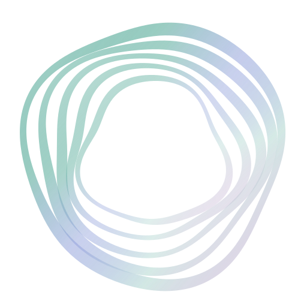
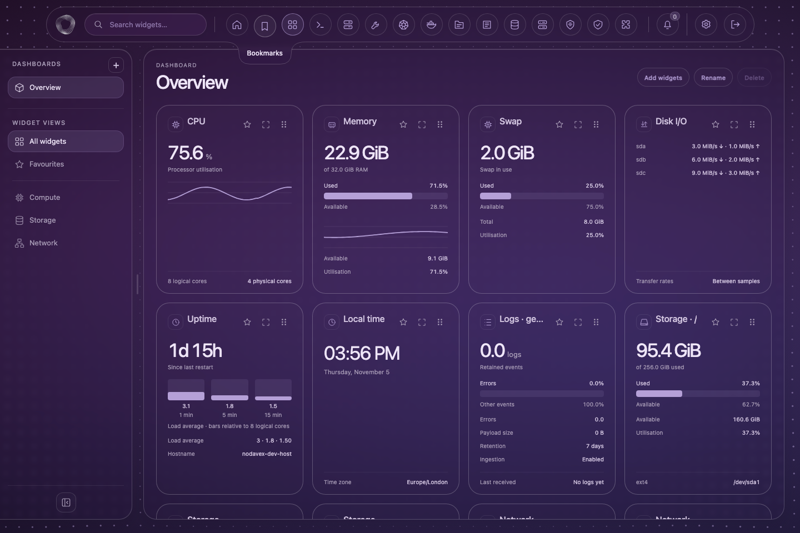
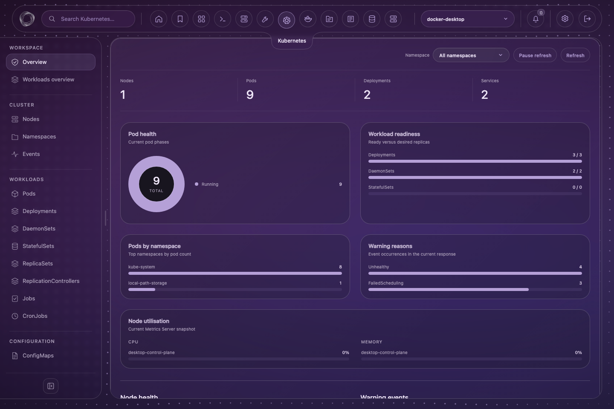

Observe
Live system context
Five-second host metrics, resizable dashboards, process and service inspection, system logs, networking events and retained history.

NodavexSelf-hosted infrastructure workspace
Monitor hosts, operate Kubernetes, manage containers, investigate logs, query databases and automate routine work from one private control surface.

01 · Platform
Nodavex brings live telemetry and deliberate operational controls together. Every workspace shares the same search, themed glass interface, permissions and audit-friendly review flow.
Observe
Five-second host metrics, resizable dashboards, process and service inspection, system logs, networking events and retained history.
Operate
Run allow-listed commands, manage services and perform infrastructure changes with explicit confirmation.
Automate
Schedule allowed actions and scan a weekly 7 × 24 heatmap for successful and failed runs.
Own
One self-hosted agent serves the UI and API. Accounts, configuration and retained data stay on your machine.
02 · Extensions
Enable only the workspaces your environment needs. Every extension lives inside the same navigation, search and theme system.
Save and search sites, group categories, mark favourites, import browser bookmarks and keep personal icons.
A private operational inbox for users, applications and connected receiving devices.
Receive HTTP and syslog events into daily partitions, then investigate them with streamed SQL.
Use the host’s active context to inspect and operate cluster resources without importing credentials.
Turn allow-listed host commands into reusable operational shortcuts and scheduled routines.
Understand the host from inventory through live metrics, local services, interfaces and logs.
Investigate connectivity directly from the monitored host with bounded diagnostic operations.
Manage the local Docker engine, its containers, images, networks and volumes.
Browse local volumes safely and understand where disk capacity is being consumed.
Inventory readable local certificates and surface expiry windows before they become incidents.
Review practical host findings with evidence instead of an opaque aggregate score.
Explore PostgreSQL and MySQL with a focused SQL workspace and schema-aware tools.
Poll Linux hosts over SSH and bring remote server metrics into shared dashboards.
03 · Interface
A consistent translucent workspace keeps high-volume operational data readable while preserving context.

04 · Distribution roadmap
The agent and buildless web interface travel together. Standalone, native Linux, container and Synology packages are planned distribution targets.
Single platform-specific agent binary with the complete web interface embedded.
nodavex-agent --port 8765Native Debian and RHEL packages with configuration, service user and systemd lifecycle.
.deb · .rpmMulti-architecture Docker images for repeatable deployment on amd64 and arm64 hosts.
docker run nodavex/agentA DSM 7 package with Synology-native service management for supported NAS architectures.
.spk · DSM 7Built for infrastructure you own
Keep operational context close, credentials local and every action deliberate.